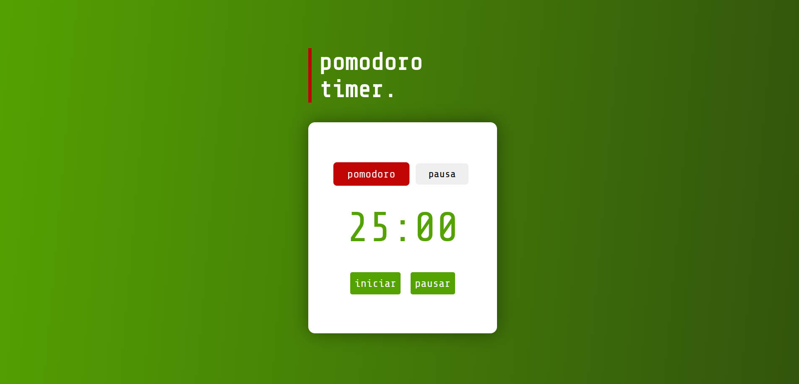
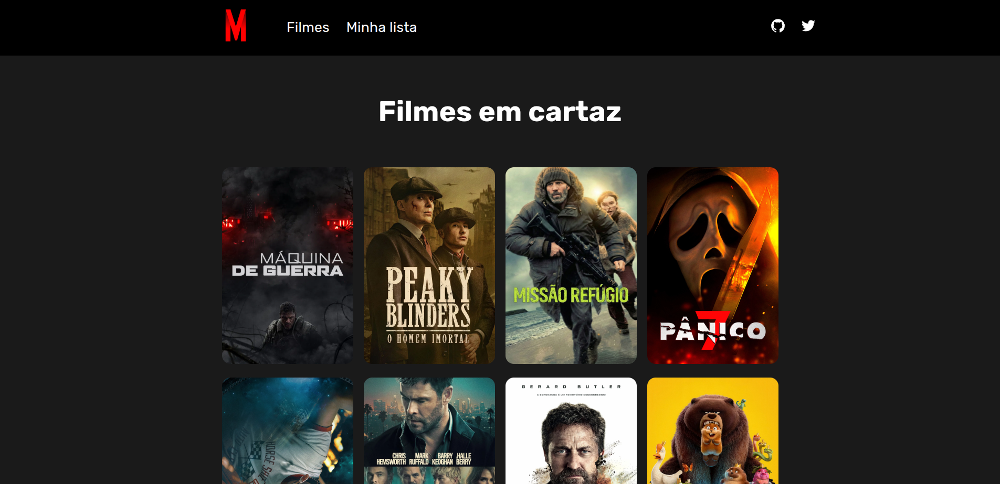
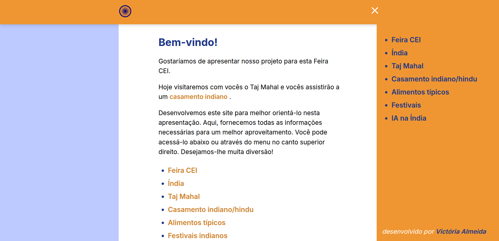
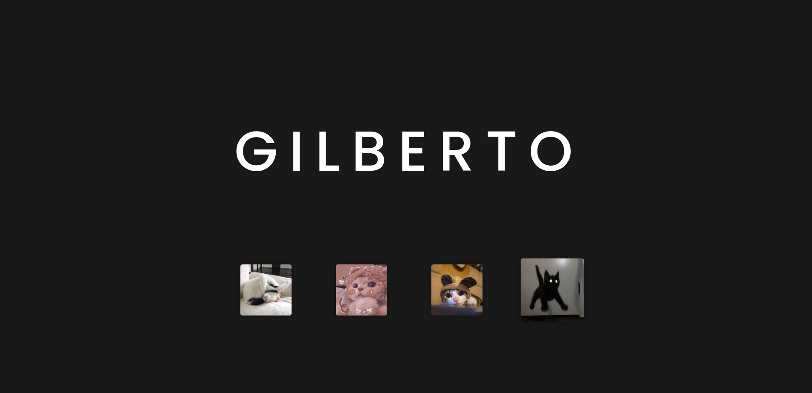

Portfólio de projetos

Pomodoro Timer
Projeto de timer para gerenciamento de tempo que utiliza "A Técnica Pomodoro". O projeto foi desenvolvido com as tecnologias HTML, CSS e JS. De uso simples, onde temos uma aba para marcar o tempo de foco e a segunda aba para o tempo de pausa.

Movick
Projeto de site com informações de filmes que estão em cartaz no momento, onde você pode ler a sinopse, acessar o trailer e adicionar a sua lista o filme desejado.

India - CEI FAIR
Projeto desenvolvido para um evento de culminância do curso de idiomas disponibilizado pelo Estado do Espírito Santo, o site é completamente em inglês, contém informações sobre do que se trata o CEI, o CEI Fair, e muitas outras informações sobre a apresentação feita no evento. Este projeto foi desenvolvido com ReactJS e muito amor.

Gatinhos coloridos
Projeto interativo onde os elementos mudam de cor dinamicamente com JavaScript, um projeto onde pude me divertir aprendendo, achei fofo e o utilizei para aprender sobre a manipulação do DOM com JS.